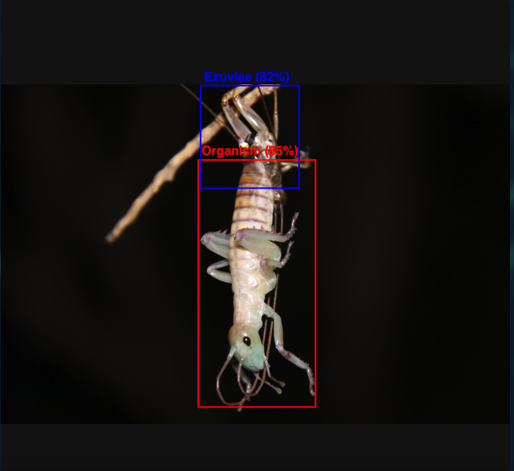
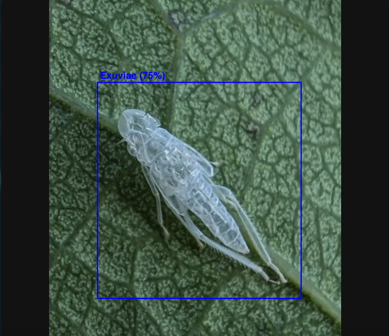
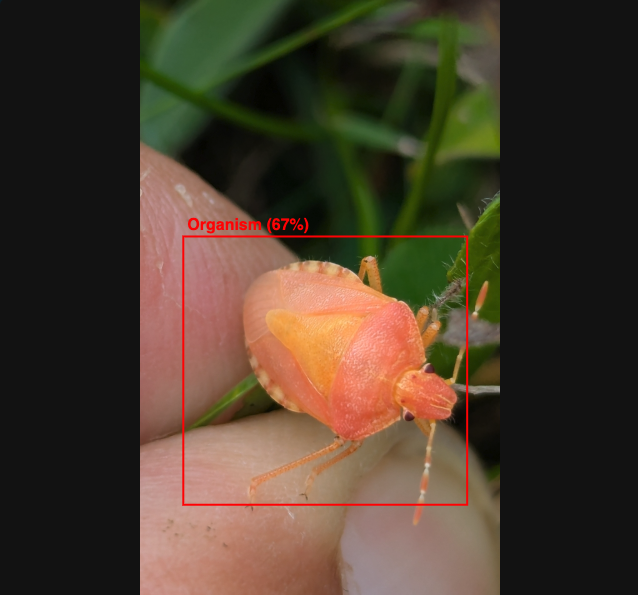

A detector looks for the animal and its shed skin. A classifier reads the geometry between them. For papers, a language model lists only what the text supports.

Organism and exuvia detected

Exuvia detected

Organism detected
Extracted traits
Raw model output
Useful response? Saved as a fine-tuning signal (see llm/finetuning/).
Moulting
The animal is pulling itself out of its old cuticle.
Post-moult
New cuticle, still soft and pale; the old one is already shed.